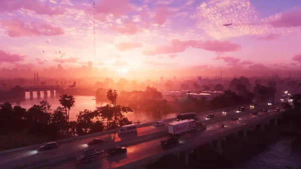

class: center, middle # Aplicações de Computação Gráfica ## Semana Profissão Engenheiro 2024 ??? Notes for the _first_ slide! --- class: center, middle <table> <thead> <tr> <th style="text-align: center;">Henrique Silva</th> <th style="text-align: center;">Tiago Branquinho</th> </tr> </thead> <tbody> <tr> <td style="text-align: center;"><img src="media/202007242.jpg" alt="Henrique Silva" style="width: 200px; height: 200px;"></td> <td style="text-align: center;"><img src="media/tiago.jpg" alt="Tiago Branquinho" style="width: 200px; height: 200px;"></td> </tr> <tr> <td style="text-align: center;">Data Science, Machine Learning</td> <td style="text-align: center;">Mobile and Web Development, AI</td> </tr> </tbody> </table> <br> <div style="font-size: 0.7em;"> MSc in Informatics and Computing Engineering Students @ FEUP<br> </div> --- # Agenda 1. Intrudução à Computação Gráfica 2. WebGL 3. Jogo do Pássaro 4. Demo 5. Detalhes 6. Jogatana 7. Questões --- # Intrudução à Computação Gráfica - Termo chique que representa o processo de usar computadores para criar e manipular imagens - Pode ser usada para a criação de modelos 3D, de paisagens e de jogos. - Por trás das imagens, há uma base sólida de matemática e física, que nos permite simular coisas como movimento, luz e sombra. - A computação gráfica permite-nos transformar ideias em realidade digital, abrindo portas à imaginação. Jogos como GTA VI são o melhor exemplo.  --- # WebGL - Conjunto de materiais que permite criar animações e gráficos interativos, tal como aqueles que vêm em sites e jogos. - O que distingue esta tecnologia é que funciona diretamente no vosso browser. - Em WebGL tudo é feito com triângulos. --- # Jogo do Pássaro - Criar uma esfera - Colocar uma imagem como fundo do nosso mundo - Criar um pássaro (quem diria?) - Criar um terreno com relevo - Adicionar ovos e ninho - Adicionar árvores - Detalhes adicionais --- class: center, middle # Demo --- # Detalhes --- class: center, middle # QA --- # Creating an accessible and secure workflow